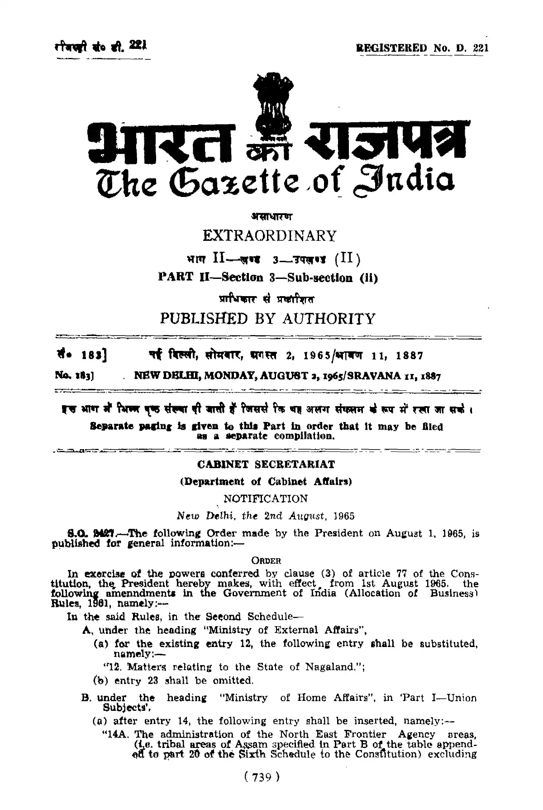
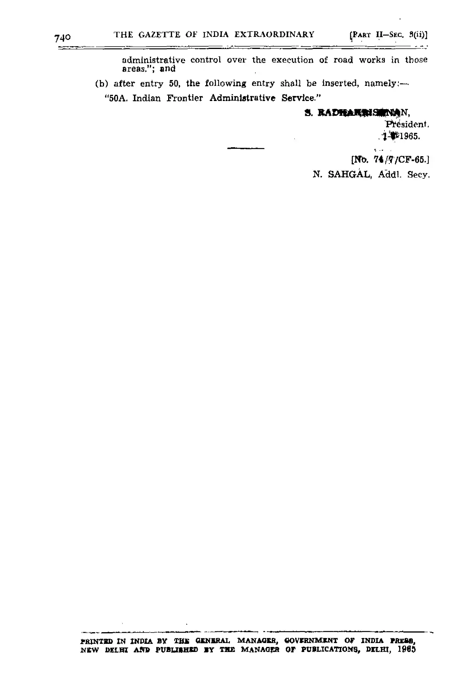

Amendment #41 (S.O. 2427, 1965)
4 changes: 0 to the First Schedule, 4 to the Second Schedule. 4 applied
The order, page by page
Page 1 of 2

123Schedule 2 › Ministry of External Affairs › entry 12
- 12. Matters relating to the State of Nagaland.
applied at schedule 2 › ministry MINISTRY OF EXTERNAL AFFAIRS › entry 12 in the Rules after #41
Schedule 2 › Ministry of External Affairs › entry 23
applied at schedule 2 › ministry MINISTRY OF EXTERNAL AFFAIRS › entry 23 in the Rules after #41
after Schedule 2 › Ministry of Home Affairs › Part I Union Subjects › entry 14
- 14A. The administration of the North East Frontier Agency areas (le. tribal areas of Assam 3pecifled in Part B of the table append - ed to part 20 of the Sixth Schedule to the Constitution) excluding THE GAŻĘTTE OF INDIA EXTRAORDINARY administrative control over the execution of road works in those…
applied at schedule 2 › ministry MINISTRY OF HOME AFFAIRS › part I › group_heading The following subjects which are relatable to… in the Rules after #41
read page break
Page 2 of 2

4after Schedule 2 › Ministry of Home Affairs › Part I Union Subjects › entry 50
- 50A. Indian Frontier Administrative Service.
applied at schedule 2 › ministry MINISTRY OF HOME AFFAIRS › part I › group_heading The following subjects which are relatable to… in the Rules after #41
How this document was read
Edits to the reading
| Date | By | Edit | Before → after |
|---|---|---|---|
| 12 November 2026 | claude | word corrected | |
| 12 November 2026 | claude | word corrected |
From the Government of India (Allocation of Business) Rules, 1961 and their amendments, as published by the Cabinet Secretariat (cabsec.gov.in), read by orgpedia. The readings of the older scanned gazettes have known gaps.